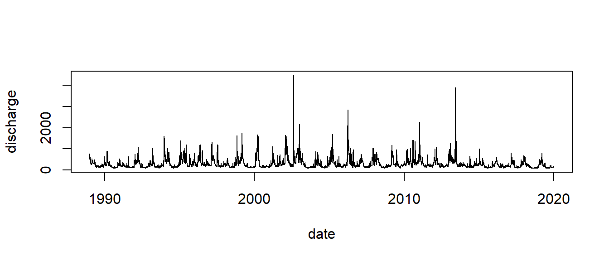
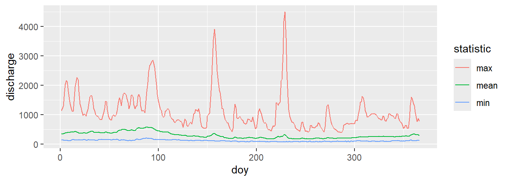

library(readr) # modernized functions to read rectangular data like csv
library(dplyr) # the most essential tidyverse packages
library(tidyr) # contains for example pivot tables
library(lubridate) # a tidyverse package for dates
library(ggplot2) # high level plotting with the grammar of graphics03-Discharge of River Elbe: Date and Time Computation, Data Management and Plotting with R
1 Introduction and prerequisites
The following practical example demonstrates how data in “long format” can be analysed with R. It builds up on the previous exercise about date and time computation and pivot tables with LibreOffice.
1.1 Software prerequisites
The example assumes that recent versions of R and RStudio are installed, together with some add-on packages dplyr, tidyr, readr, lubridate and ggplot2. The packages should already be available in the computer pool of the university, otherwise install it over the “Packages” pane in RStudio or from the command line:
If all packages are installed, we need to load it to the active session with
The examples were tested with R versions \(\ge\) 4.2.1
1.2 The data set
The data set consists of daily measurements for discharge of the Elbe River in Dresden (daily discharge sum in \(\mathrm{m^3 s^{-1}}\)). The data were kindly provided by the German Federal Institute for Hydrology (BfG)1.
Please read the information file elbe_info.txt about data source and copyright before downloading the data file “elbe.csv”. The data set is then available in the course folder or from https://tpetzoldt.github.io/datasets/.
1.3 Overview
We first learn how to import data to R, then we will do date and time conversion and create some plots. After that we learn how to aggregate, analyse and reformat the data set. A final outlook gives an impression how to use pipelines and high level plotting with the ggplot package.
2 Data Import to R
2.1 Import of spreadsheet and text files
R can access spreadsheet tables and data bases directly using packages like readxl for Excel files. It can also read LibreOffice files and data bases.
Here we want to make it simple and just read the data from a comma separated values file (.csv) that can be shared between different software systems. In our example, the first row contains a table header with unique variable names. Valid variable names must start with a letter and should not contain special characters, spaces etc. Additional meta information (e.g. source of data) and measurement cen be documented separately, for example in the separate file elbe_info.txt.
The example file elbe.csv contains daily discharge of the Elbe River in \(\mathrm{m^3 s^{-1}}\) from gauging station Dresden, river km 55.6 from the Federal Waterways and Shipping Administration (WSV) and where provided by the Federal Institute for Hydrology (BfG).
The third column “validated” indicates whether the values were finally approved by WSV and BfG. Data from the 19th century are particularly uncertain. Please consult the file elbe_info.txt for details.

2.2 Input method 1: Use the import dataset wizard of RStudio
First, download the file
elbe.csvand store it to your working directory.Now Open RStudio and Select: File – Import Dataset – From Text (readr).
Open the file and you will see the import dataset wizard. Select the correct settings for your file and choose an appropriate name (e.g.
elbe) for the data frame in R.
2.3 Input method 2: Read data directly from R
Navigate to the data file with the “files pane” (bottom right in Rstudio by default),
If you cannot find the file easily, use the dots (…) of the file pane.
Select: More – Set as Working Directory.
Run the following commands in R:
library("readr")
elbe <- read_csv("elbe.csv")This works if the data format is a true csv (comma separated values) file with English decimal dot “.” for the numbers and “,” for the column separator. If the file format is different, we may use read.table, a more flexible function that allows to specify the column separator decimal.
Note: for the exercise, one of the above methods is sufficient, either the import wizard or read_csv. The command line method is advantageous if a file is read several times or if several files need to be imported.
3 Data management with R – the modern way
In the last years, a new series of packages, called the “tidyverse” appeared, leading to a revolution how to work with data. We start with the Elbe data set and date and some time computation. The tidyverse methods look intriguingly simple, so that many people like it. Often, there is also a classical way in “base R” that is sometimes still needed. Experts know both.
3.1 Date and time conversion
In the following we extend the elbe data frame by adding information about the day, month, year and day of year. Here function mutate adds additional columns, or modifies existing if the column names exist.
Note also that the day of year function in the date and time package lubridate is named yday. Details about date and time conversion can be found in a cheatsheet available from https://rstudio.github.io/cheatsheets/lubridate.pdf
elbe <- mutate(elbe,
date = as.Date(date), # may be redundant if read_csv was used
day = day(date),
month = month(date),
year = year(date),
doy = yday(date))Now, have a look at the “Global Environment” pane and inspect the data structure of the elbe data frame.
3.2 Basic plotting with R’s base plot
The full time series can be plotted using the date as argument for the x-axis and discharge for the y-axis. The $ sign indicates from which column of the elbe-table data are taken. The "l" indicates line plots.
plot(elbe$date, elbe$discharge, type="l")The same can be done with a so-called formula syntax. Here y and x are given in opposite order, separated with a ~ (tilde sign). It can be read as “y as a function of x”. The formula syntax allows to specify the data as a separate argument.
plot(discharge ~ date, data=elbe, type="l")
The formula syntax has additional benefits, for example a subset argument:
plot(discharge ~ doy, data=elbe, subset = year==2002, col="blue", type="l")
lines(discharge ~ doy, data=elbe, subset = year==2003, col="red")Exercise
Plot 4 years with 4 different colors, 2 wet and 2 dry years.
3.3 Histograms
Histograms show the distribution of the data. Compare the shape of following three:
- Histogram with untransformed data
- Histogram with log-transformed data
- Histogram with log-transformed data, where a certain baseflow is subtracted before taking the log.
hist(elbe$discharge)
hist(log(elbe$discharge))
hist(log(elbe$discharge - 0.9 * min(elbe$discharge)))Exercises
- Discuss, which of the three histograms best describe discharge distribution.
- Repeat the plot with smaller classes, e.g.
hist(elbe$discharge, breaks=50).
3.4 Boxplots
Boxplots are a very compact way to visualize the distribution of data:
boxplot(elbe$discharge)Exercises
Create boxplots for:
- log-transformed discharge,
- log-transformed value of discharge - baseflow.
- Interpret the results: What do the “middle line”, the box, the whiskers and the extreme values tell us?
- Discuss the “outliers”: how many, at which side and if they are really “outliers”.
3.5 Cumulative sums
Annual cumulative sum plots are a hydrological standard tool used by reservoir managers. We can use the R function cumsum, that by successive cumulation converts a sequence of:
\(x_1, x_2, x_3, x_4, \dots\) into
\((x_1), (x_1+x_2), (x_1+x_2+x_3), (x_1+x_2+x_3+x_4), \dots\)
If we just use cumsum for daily discharge (in \(\mathrm{m^3 s^{-1}}\)) and multiply it with the number of seconds per day / 1e6, we get a cumulative sum in Mio \(\mathrm{m^3}\) over all years:
elbe$cum <- cumsum(elbe$discharge) * 60*60*24 / 1e6
plot(elbe$date, elbe$cum, type="l", ylab="Mio m^3")However, cumulation is more commonly done per year, i.e. each year should start with the discharge from a given start day. In the following, let’s start with 1st of January, experts may consider to modify the code, to use the German hydrological year.
one_year <- subset(elbe, year == 2000)
one_year$cum <- cumsum(one_year$discharge) * 60*60*24 / 1e6
plot(one_year$date, one_year$cum, type="l", ylab="Mio m^3")Here, a steep increase shows a wet period, a flat curve indicates a dry period.
4 Summarizing and pivoting data
4.1 Summaries and cross-tabulation
Here we use the tidyverse method summarize, after grouping with group_by. It is, compared to the classical aggregate-function i R more powerful and much easier to use:
## calculate annual mean, minimum, maximum
elbe_grouped <- group_by(elbe, year)
totals <- summarize(elbe_grouped,
mean = mean(discharge),
min = min(discharge),
max = max(discharge))
totalsExercise
Use the above method to compute annual total discharge sums and monthly average discharge values.
4.2 A standard pivot table
Tidyverse provides also tools for the conversion of data base tables (long data format) into cross-tables (wide data format) and vice versa. This functionality changed several times in the last years, so you may see functions like melt and cast or gather and spread doing more or less the same, but with different syntax. The most recent development suggests the two functions pivot_wider and pivot_longer for this purpose.
Its first argument is a data base table, the other arguments define the structure of the desired crosstable.
Here id_cols is the name of a column in a long table that will become the rows, names_from indicates where the names of the columns are taken from and values_from the column with the values for the cross table. If more than one value is possible for a row x column combination, an optional values_fn can be given.
elbe_wide <- pivot_wider(elbe,
id_cols = doy,
names_from = year,
values_from = discharge,
#values_fn = mean
)
elbe_wideExercises
Create a crosstable for monthly maximum discharge over all years.
4.3 Back-conversion of a crosstable into a data base table
The inverse case is also possible, e.g. the conversion of a cross table into a data base table. It can be done with the function pivot_longer. The column of the id.vars variable(s) will become identifier(s) downwards.
pivot_longer(elbe_wide, names_to="year", cols=as.character(1989:2019))5 Outlook: Pipelined data analysis with dplyr and ggplot
The following examples are intended as an outlook, how modern data management packages from the so-called “tidyverse” can be combined to pipeline an analysis in a compact way. The examples combine the data manipulation package dplyr with the plotting package ggplot2 and the so-called pipeline |> operator that “pipes” the outcome of one function to the next.
All packages have in common to rely on long database tables, the “tidy data format”.
A note if you read this at the beginning of your R experience: pipelines and tidyverse are very elegant and the examples below give an impression what is possible with very few commands. That opens up a whole world of possibilities. It takes some time to understand everything, but the general concept is easy to grasp.
A short introduction about pipelines is found here and some more on www.r-bloggers.com.
5.1 Minimum-maximum plot with summarize and ggplot2
## Read data
elbe <- read.csv("elbe.csv")
## do everything in one pipeline:
## doy calculation |> grouping |> min, max, mean |> melt to long format |>
## plotting
elbe |>
mutate(doy = yday(date)) |>
group_by(doy) |>
summarize(max = max(discharge),
mean = mean(discharge),
min = min(discharge)) |>
pivot_longer(cols = c("min", "mean", "max"),
names_to = "statistic",
values_to = "discharge") |>
ggplot(aes(doy, discharge, color = statistic)) + geom_line()
5.2 Cumulative sums for all years
Cumulative sums are a standard tool used by hydrologists and reservoir managers. They allow to detect easily dry and wet years and periods.
If we just use cumsum, we get a cumulative sum over all years:
elbe |>
mutate(doy = yday(date), year = year(date)) |>
#filter(year %in% 2000:2010) |>
group_by(year = factor(year)) |>
mutate(cum_discharge = cumsum(discharge) * 60*60*24) |>
ggplot(aes(doy, cum_discharge, color = year)) + geom_line()Exercises
Which year was the wettest, which one the driest year in total? Find a year with dry spring and wet summer. Use the outcommented
filterto reduce the number of simultanaeous lines.Modify the commands so that the hydrological year is shown. The German hydrological year goes from 1st November to 31st October of the following year. Other countries have different regulations.
Footnotes
Data Source: Federal Waterways and Shipping Administration (WSV), provided by the Federal Institute for Hydrology (BfG).↩︎